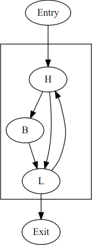
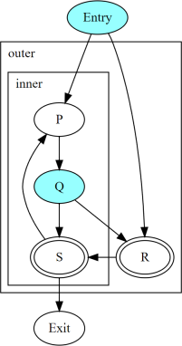
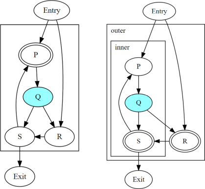
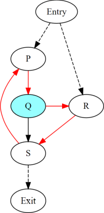
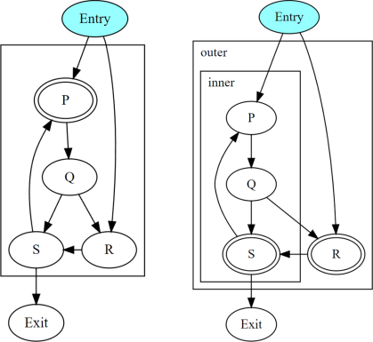

Convergence And Uniformity#
Introduction#
In some environments, groups of threads execute the same program in parallel, where efficient communication within a group is established using special primitives called convergent operations. The outcome of a convergent operation is sensitive to the set of threads that participate in it.
The intuitive picture of convergence is built around threads executing in “lock step” — a set of threads is thought of as converged if they are all executing “the same sequence of instructions together”. Such threads may diverge at a divergent branch, and they may later reconverge at some common program point.
In this intuitive picture, when converged threads execute an instruction, the resulting value is said to be uniform if it is the same in those threads, and divergent otherwise. Correspondingly, a branch is said to be a uniform branch if its condition is uniform, and it is a divergent branch otherwise.
But the assumption of lock-step execution is not necessary for describing communication at convergent operations. It also constrains the implementation (compiler as well as hardware) by overspecifying how threads execute in such a parallel environment. To eliminate this assumption:
We define convergence as a relation between the execution of each instruction by different threads and not as a relation between the threads themselves. This definition is reasonable for known targets and is compatible with the semantics of convergent operations in LLVM IR.
We also define uniformity in terms of this convergence. The output of an instruction can be examined for uniformity across multiple threads only if the corresponding executions of that instruction are converged.
This document describes a static analysis for determining convergence at each instruction in a function. The analysis extends previous work on divergence analysis [DivergenceSPMD] to cover irreducible control-flow. The described analysis is used in LLVM to implement a UniformityAnalysis that determines the uniformity of value(s) computed at each instruction in an LLVM IR or MIR function.
Julian Rosemann, Simon Moll, and Sebastian Hack. 2021. An Abstract Interpretation for SPMD Divergence on Reducible Control Flow Graphs. Proc. ACM Program. Lang. 5, POPL, Article 31 (January 2021), 35 pages. https://doi.org/10.1145/3434312
Motivation#
Divergent branches constrain program transforms such as changing the CFG or moving a convergent operation to a different point of the CFG. Performing these transformations across a divergent branch can change the sets of threads that execute convergent operations convergently. While these constraints are out of scope for this document, uniformity analysis allows these transformations to identify uniform branches where these constraints do not hold.
Uniformity is also useful by itself on targets that execute threads in groups with shared execution resources (e.g. waves, warps, or subgroups):
Uniform outputs can potentially be computed or stored on shared resources.
These targets must “linearize” a divergent branch to ensure that each side of the branch is followed by the corresponding threads in the same group. But linearization is unnecessary at uniform branches, since the whole group of threads follows either one side of the branch or the other.
Terminology#
- Cycles
Described in LLVM Cycle Terminology.
- Closed path
Described in Closed Paths and Cycles.
- Disjoint paths
Two paths in a CFG are said to be disjoint if the only nodes common to both are the start node or the end node, or both.
- Join node
A join node of a branch is a node reachable along disjoint paths starting from that branch.
- Diverged path
A diverged path is a path that starts from a divergent branch and either reaches a join node of the branch or reaches the end of the function without passing through any join node of the branch.
Threads and Dynamic Instances#
Each occurrence of an instruction in the program source is called a static instance. When a thread executes a program, each execution of a static instance produces a distinct dynamic instance of that instruction.
Each thread produces a unique sequence of dynamic instances:
The sequence is generated along branch decisions and loop traversals.
Starts with a dynamic instance of a “first” instruction.
Continues with dynamic instances of successive “next” instructions.
Threads are independent; some targets may choose to execute them in groups in order to share resources when possible.

1 |
2 |
3 |
4 |
5 |
6 |
7 |
8 |
9 |
|||
Thread 1 |
Entry1 |
H1 |
B1 |
L1 |
H3 |
L3 |
Exit |
||||
Thread 2 |
Entry1 |
H2 |
L2 |
H4 |
B2 |
L4 |
H5 |
B3 |
L5 |
Exit |
In the above table, each row is a different thread, listing the
dynamic instances produced by that thread from left to right. Each
thread executes the same program that starts with an Entry node
and ends with an Exit node, but different threads may take
different paths through the control flow of the program. The columns
are numbered merely for convenience, and empty cells have no special
meaning. Dynamic instances listed in the same column are converged.
Convergence#
Convergence-before is a strict partial order over dynamic instances that is defined as the transitive closure of:
If dynamic instance
Pis executed strictly beforeQin the same thread, thenPis convergence-beforeQ.If dynamic instance
Pis executed strictly beforeQ1in the same thread, andQ1is converged-withQ2, thenPis convergence-beforeQ2.If dynamic instance
P1is converged-withP2, andP2is executed strictly beforeQin the same thread, thenP1is convergence-beforeQ.
1 |
2 |
3 |
4 |
5 |
6 |
7 |
8 |
9 |
|
Thread 1 |
Entry |
… |
S2 |
T |
… |
Exit |
|||
Thread 2 |
Entry |
… |
Q2 |
R |
S1 |
… |
Exit |
||
Thread 3 |
Entry |
… |
P |
Q1 |
… |
The above table shows partial sequences of dynamic instances from
different threads. Dynamic instances in the same column are assumed
to be converged (i.e., related to each other in the converged-with
relation). The resulting convergence order includes the edges P ->
Q2, Q1 -> R, P -> R, P -> T, etc.
Converged-with is a transitive symmetric relation over dynamic instances produced by different threads for the same static instance.
It is impractical to provide any one definition for the converged-with relation, since different environments may wish to relate dynamic instances in different ways. The fact that convergence-before is a strict partial order is a constraint on the converged-with relation. It is trivially satisfied if different dynamic instances are never converged. Below, we provide a relation called maximal converged-with, which satisifies convergence-before and is suitable for known targets.
备注
The convergence-before relation is not directly observable. Program transforms are in general free to change the order of instructions, even though that obviously changes the convergence-before relation.
Converged dynamic instances need not be executed at the same time or even on the same resource. Converged dynamic instances of a convergent operation may appear to do so but that is an implementation detail.
The fact that
Pis convergence-beforeQdoes not automatically imply thatPhappens-beforeQin a memory model sense.
Maximal Convergence#
This section defines a constraint that may be used to produce a maximal converged-with relation without violating the strict convergence-before order. This maximal converged-with relation is reasonable for real targets and is compatible with convergent operations.
The maximal converged-with relation is defined in terms of cycle headers, with the assumption that threads converge at the header on every “iteration” of the cycle. Informally, two threads execute the same iteration of a cycle if they both previously executed the cycle header the same number of times after they entered that cycle. In general, this needs to account for the iterations of parent cycles as well.
Maximal converged-with:
Dynamic instances
X1andX2produced by different threads for the same static instanceXare converged in the maximal converged-with relation if and only if:
Xis not contained in any cycle, or,For every cycle
Cwith headerHthat containsX:
every dynamic instance
H1ofHthat precedesX1in the respective thread is convergence-beforeX2, and,every dynamic instance
H2ofHthat precedesX2in the respective thread is convergence-beforeX1,without assuming that
X1is converged withX2.
备注
Cycle headers may not be unique to a given CFG if it is irreducible. Each cycle hierarchy for the same CFG results in a different maximal converged-with relation.
For brevity, the rest of the document restricts the term converged to mean “related under the maximal converged-with relation for the given cycle hierarchy”.
Maximal convergence can now be demonstrated in the earlier example as follows:
1 |
2 |
3 |
4 |
5 |
6 |
7 |
8 |
9 |
|||
Thread 1 |
Entry1 |
H1 |
B1 |
L1 |
H3 |
L3 |
Exit |
||||
Thread 2 |
Entry2 |
H2 |
L2 |
H4 |
B2 |
L4 |
H5 |
B3 |
L5 |
Exit |
Entry1andEntry2are converged.H1andH2are converged.B1andB2are not converged due toH4which is not convergence-beforeB1.H3andH4are converged.H3is not converged withH5due toH4which is not convergence-beforeH3.L1andL2are converged.L3andL4are converged.L3is not converged withL5due toH5which is not convergence-beforeL3.
Dependence on Cycles Headers#
Contradictions in convergence-before are possible only between two
nodes that are inside some cycle. The dynamic instances of such nodes
may be interleaved in the same thread, and this interleaving may be
different for different threads. Cycle headers serve as implicit
points of convergence in the maximal converged-with relation.
When a thread executes a node X once and then executes it again,
it must have followed a closed path in the CFG that includes X.
Such a path must pass through the header of at least one cycle — the
smallest cycle that includes the entire closed path. In a given
thread, two dynamic instances of X are either separated by the
execution of at least one cycle header, or X itself is a cycle
header.
Consider a sequence of nested cycles C1, C2, …, Ck such
that C1 is the outermost cycle and Ck is the innermost cycle,
with headers H1, H2, …, Hk respectively. When a thread
enters the cycle Ck, any of the following is possible:
The thread directly entered cycle
Ckwithout having executed any of the headersH1toHk.The thread executed some or all of the nested headers one or more times.
The maximal converged-with relation captures the following intuition about cycles:
When two threads enter a top-level cycle
C1, they execute converged dynamic instances of every node that is a child ofC1.When two threads enter a nested cycle
Ck, they execute converged dynamic instances of every node that is a child ofCk, until either thread exitsCk, if and only if they executed converged dynamic instances of the last nested header that either thread encountered.Note that when a thread exits a nested cycle
Ck, it must follow a closed path outsideCkto reenter it. This requires executing the header of some outer cycle, as described earlier.
Consider two dynamic instances X1 and X2 produced by threads T1
and T2 for a node X that is a child of nested cycle Ck.
Maximal convergence relates X1 and X2 as follows:
If neither thread executed any header from
H1toHk, thenX1andX2are converged.Otherwise, if there are no converged dynamic instances
Q1andQ2of any headerQfromH1toHk(whereQis possibly the same asX), such thatQ1precedesX1andQ2precedesX2in the respective threads, thenX1andX2are not converged.Otherwise, consider the pair
Q1andQ2of converged dynamic instances of a headerQfromH1toHkthat occur most recently beforeX1andX2in the respective threads. ThenX1andX2are converged if and only if there is no dynamic instance of any header fromH1toHkthat occurs betweenQ1andX1in threadT1, or betweenQ2andX2in threadT2. In other words,Q1andQ2represent the last point of convergence, with no other header being executed before executingX.
Example:

The above figure shows two nested irreducible cycles with headers
R and S. The nodes Entry and Q have divergent
branches. The table below shows the convergence between three threads
taking different paths through the CFG. Dynamic instances listed in
the same column are converged.
1
2
3
4
5
6
7
8
10
Thread1
Entry
P1
Q1
S1
P3
Q3
R1
S2
Exit
Thread2
Entry
P2
Q2
R2
S3
Exit
Thread3
Entry
R3
S4
Exit
P2andP3are not converged due toS1Q2andQ3are not converged due toS1S1andS3are not converged due toR2S1andS4are not converged due toR3
Informally, T1 and T2 execute the inner cycle a different
number of times, without executing the header of the outer cycle. All
threads converge in the outer cycle when they first execute the header
of the outer cycle.
Uniformity#
The output of two converged dynamic instances is uniform if and only if it compares equal for those two dynamic instances.
The output of a static instance
Xis uniform for a given set of threads if and only if it is uniform for every pair of converged dynamic instances ofXproduced by those threads.
A non-uniform value is said to be divergent.
For a set S of threads, the uniformity of each output of a static
instance is determined as follows:
The semantics of the instruction may specify the output to be uniform.
Otherwise, the output is divergent if the static instance is not m-converged.
Otherwise, if the static instance is m-converged:
If it is a PHI node, its output is uniform if and only if for every pair of converged dynamic instances produced by all threads in
S:Both instances choose the same output from converged dynamic instances, and,
That output is uniform for all threads in
S.
Otherwise, the output is uniform if and only if the input operands are uniform for all threads in
S.
Divergent Cycle Exits#
When a divergent branch occurs inside a cycle, it is possible that a diverged path continues to an exit of the cycle. This is called a divergent cycle exit. If the cycle is irreducible, the diverged path may re-enter and eventually reach a join within the cycle. Such a join should be examined for the diverged entry criterion.
Nodes along the diverged path that lie outside the cycle experience
temporal divergence, when two threads executing convergently inside
the cycle produce uniform values, but exit the cycle along the same
divergent path after executing the header a different number of times
(informally, on different iterations of the cycle). For a node N
inside the cycle the outputs may be uniform for the two threads, but
any use U outside the cycle receives a value from non-converged
dynamic instances of N. An output of U may be divergent,
depending on the semantics of the instruction.
Static Uniformity Analysis#
Irreducible control flow results in different cycle hierarchies depending on the choice of headers during depth-first traversal. As a result, a static analysis cannot always determine the convergence of nodes in irreducible cycles, and any uniformity analysis is limited to those static instances whose convergence is independent of the cycle hierarchy:
m-converged static instances:
A static instance
Xis m-converged for a given CFG if and only if the maximal converged-with relation for its dynamic instances is the same in every cycle hierarchy that can be constructed for that CFG.备注
In other words, two dynamic instances
X1andX2of an m-converged static instanceXare converged in some cycle hierarchy if and only if they are also converged in every other cycle hierarchy for the same CFG.As noted earlier, for brevity, we restrict the term converged to mean “related under the maximal converged-with relation for a given cycle hierarchy”.
Each node X in a given CFG is reported to be m-converged if and
only if every cycle that contains X satisfies the following necessary
conditions:
Every divergent branch inside the cycle satisfies the diverged entry criterion, and,
There are no diverged paths reaching the cycle from a divergent branch outside it.
备注
A reducible cycle trivially satisfies the above conditions. In particular, if the whole CFG is reducible, then all nodes in the CFG are m-converged.
The uniformity of each output of a static instance is determined using the criteria described earlier. The discovery of divergent outputs may cause their uses (including branches) to also become divergent. The analysis propagates this divergence until a fixed point is reached.
The convergence inferred using these criteria is a safe subset of the
maximal converged-with relation for any cycle hierarchy. In
particular, it is sufficient to determine if a static instance is
m-converged for a given cycle hierarchy T, even if that fact is
not detected when examining some other cycle hierarchy T'.
This property allows compiler transforms to use the uniformity analysis without being affected by DFS choices made in the underlying cycle analysis. When two transforms use different instances of the uniformity analysis for the same CFG, a “divergent value” result in one analysis instance cannot contradict a “uniform value” result in the other.
Generic transforms such as SimplifyCFG, CSE, and loop transforms commonly change the program in ways that change the maximal converged-with relations. This also means that a value that was previously uniform can become divergent after such a transform. Uniformity has to be recomputed after such transforms.
Divergent Branch inside a Cycle#

The above figure shows a divergent branch Q inside an irreducible
cyclic region. When two threads diverge at Q, the convergence of
dynamic instances within the cyclic region depends on the cycle
hierarchy chosen:
In an implementation that detects a single cycle
Cwith headerP, convergence inside the cycle is determined byP.In an implementation that detects two nested cycles with headers
RandS, convergence inside those cycles is determined by their respective headers.
A conservative approach would be to simply report all nodes inside irreducible cycles as having divergent outputs. But it is desirable to recognize m-converged nodes in the CFG in order to maximize uniformity. This section describes one such pattern of nodes derived from closed paths, which are a property of the CFG and do not depend on the cycle hierarchy.
Diverged Entry Criterion:
The dynamic instances of all the nodes in a closed path
Pare m-converged only if for every divergent branchBand its join nodeJthat lie onP, there is no entry toPwhich lies on a diverged path fromBtoJ.

Consider the closed path P -> Q -> R -> S in the above figure.
P and R are entries to the closed
path. Q is a divergent branch and S is a
join for that branch, with diverged paths Q -> R -> S and Q ->
S.
If a diverged entry
Rexists, then in some cycle hierarchy,Ris the header of the smallest cycleCcontaining the closed path and a child cycleC'exists in the setC - R, containing both branchQand joinS. When threads diverge atQ, one subsetMcontinues inside cycleC', while the complementNexitsC'and reachesR. Dynamic instances ofSexecuted by threads in setMare not converged with those executed in setNdue to the presence ofR. Informally, threads that diverge atQreconverge in the same iteration of the outer cycleC, but they may have executed the inner cycleC'differently.1
2
3
4
5
6
7
8
9
10
11
Thread1
Entry
P1
Q1
R1
S1
P3
…
Exit
Thread2
Entry
P2
Q2
S2
P4
Q4
R2
S4
Exit
In the table above,
S2is not converged withS1due toR1.
If
Rdoes not exist, or if any node other thanRis the header ofC, then no such child cycleC'is detected. Threads that diverge atQexecute converged dynamic instances ofSsince they do not encounter the cycle header on any path fromQtoS. Informally, threads that diverge atQreconverge atSin the same iteration ofC.1
2
3
4
5
6
7
8
9
10
Thread1
Entry
P1
Q1
R1
S1
P3
Q3
R3
S3
Exit
Thread2
Entry
P2
Q2
S2
P4
Q4
R2
S4
Exit
备注
In general, the cycle
Cin the above statements is not expected to be the same cycle for different headers. Cycles and their headers are tightly coupled; for different headers in the same outermost cycle, the child cycles detected may be different. The property relevant to the above examples is that for every closed path, there is a cycleCthat contains the path and whose header is on that path.
The diverged entry criterion must be checked for every closed path
passing through a divergent branch B and its join J. Since
every closed path passes through the header of some
cycle, this amounts to checking every cycle
C that contains B and J. When the header of C
dominates the join J, there can be no entry to any path from the
header to J, which includes any diverged path from B to J.
This is also true for any closed paths passing through the header of
an outer cycle that contains C.
Thus, the diverged entry criterion can be conservatively simplified as follows:
For a divergent branch
Band its join nodeJ, the nodes in a cycleCthat contains bothBandJare m-converged only if:
Bstrictly dominatesJ, or,The header
HofCstrictly dominatesJ, or,Recursively, there is cycle
C'insideCthat satisfies the same condition.
When J is the same as H or B, the trivial dominance is
insufficient to make any statement about entries to diverged paths.
Diverged Paths reaching a Cycle#

The figure shows two cycle hierarchies with a divergent branch in
Entry instead of Q. For two threads that enter the closed path
P -> Q -> R -> S at P and R respectively, the convergence
of dynamic instances generated along the path depends on whether P
or R is the header.
Convergence when
Pis the header.1
2
3
4
5
6
7
8
9
10
11
12
13
Thread1
Entry
P1
Q1
R1
S1
P3
Q3
S3
Exit
Thread2
Entry
R2
S2
P2
Q2
S2
P4
Q4
R3
S4
Exit
Convergence when
Ris the header.1
2
3
4
5
6
7
8
9
10
11
12
Thread1
Entry
P1
Q1
R1
S1
P3
Q3
S3
Exit
Thread2
Entry
R2
S2
P2
Q2
S2
P4
…
Exit
Thus, when diverged paths reach different entries of an irreducible cycle from outside the cycle, the static analysis conservatively reports every node in the cycle as not m-converged.
Reducible Cycle#
If C is a reducible cycle with header H, then in any DFS,
H must be the header of some cycle
C' that contains C. Independent of the DFS, there is no entry
to the subgraph C other than H itself. Thus, we have the
following:
The diverged entry criterion is trivially satisfied for a divergent branch and its join, where both are inside subgraph
C.When diverged paths reach the subgraph
Cfrom outside, their convergence is always determined by the same headerH.
Clearly, this can be determined only in a cycle hierarchy T where
C is detected as a reducible cycle. No such conclusion can be made
in a different cycle hierarchy T' where C is part of a larger
cycle C' with the same header, but this does not contradict the
conclusion in T.
Controlled Convergence#
Convergence control tokens provide an explicit semantics for determining which threads are converged at a given point in the program. The impact of this is incorporated in a controlled maximal converged-with relation over dynamic instances and a controlled m-converged property of static instances. The uniformity analysis implemented in LLVM includes this for targets that support convergence control tokens.